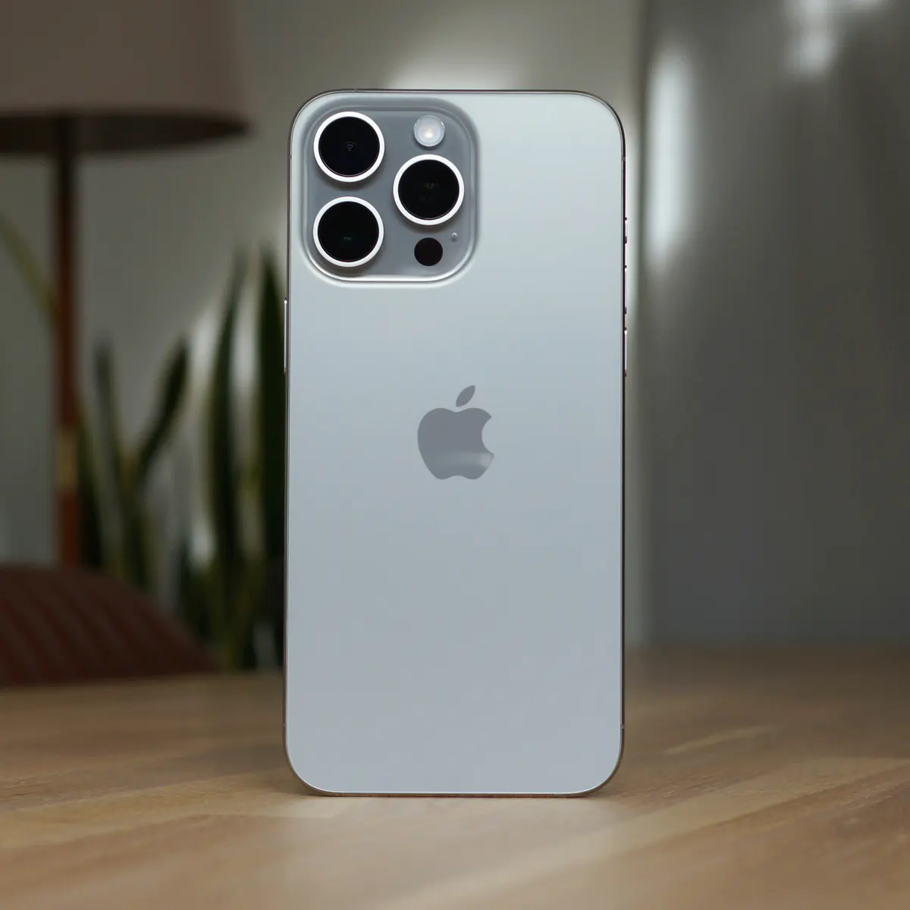

- iphone 15 pro max
- prix:7000,00 tnd

- iphone 14
- prix:3000,00tnd
L’iPhone 15 Pro est le premier iPhone en titane de qualité aérospatiale, conçu à partir du même alliage que les véhicules d’exploration envoyés en mission sur Mars.
L’écran de l’iPhone 15 Pro Max a des angles arrondis qui suivent la ligne élégante de l’appareil et s’inscrivent dans un rectangle standard. Si l’on mesure ce rectangle, l’écran affiche une diagonale de 6,69 pouces (la zone d’affichage réelle est moindre).
Utilisez l'app Localiser ou iCloud.com/find pour localiser un iPhone, un iPad, une Apple Watch ou un Mac perdu. Si vous ne trouvez pas votre appareil ou pensez qu'il a été volé, vous pouvez le verrouiller pour protéger vos informations.

pour acheter